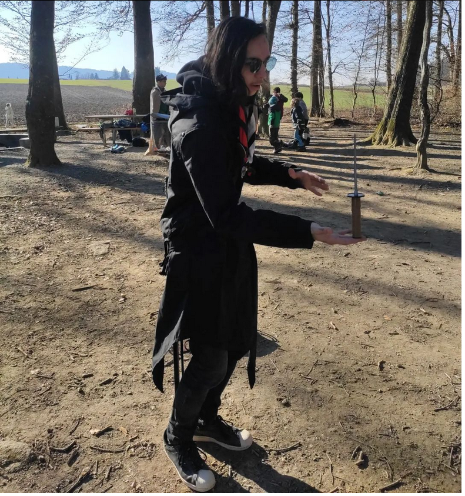

Drums
I play drums since 2015 (8 years) but at the moment not in a band. I love to play metal drums and sometimes something more calming. For me it's a relief for the day to sit at my drums and just play along some songs or improvise stuff.
Pfadi
In 2013 I've found my way to Pfadi Wohle. I was a participant for a long time. In 2021 I became a leader until now. I love to be with the kids, plan and conduct activities and camps.
Motorcycle
I love to make tours on my bike with other people. It's also my mean of transport number one in summer.